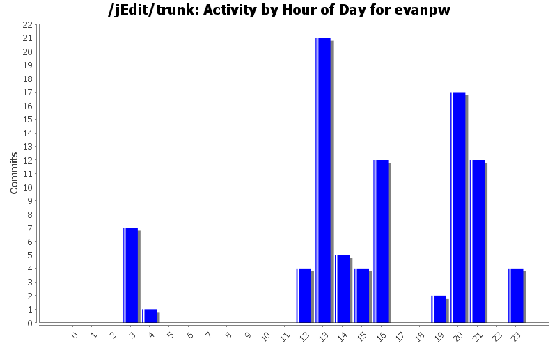
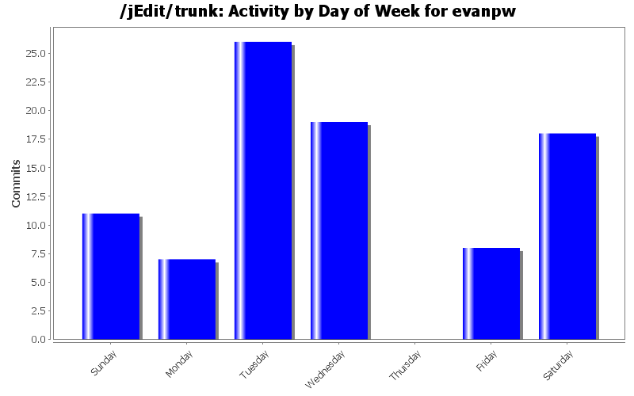
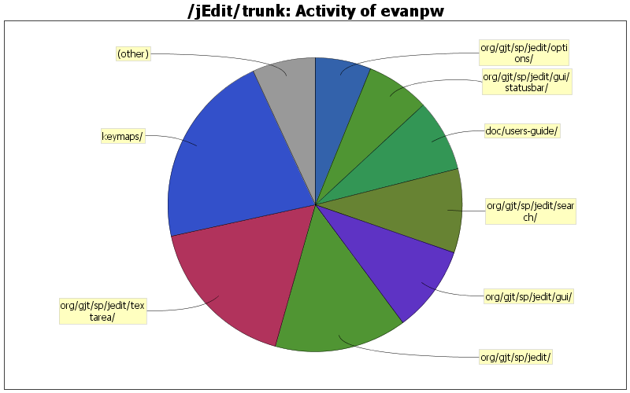

| Directory | Changes | Lines of Code | Lines per Change |
|---|---|---|---|
| Totals | 89 (100.0%) | 1609 (100.0%) | 18.0 |
| keymaps/ | 3 (3.4%) | 346 (21.5%) | 115.3 |
| org/gjt/sp/jedit/textarea/ | 11 (12.4%) | 278 (17.3%) | 25.2 |
| org/gjt/sp/jedit/ | 25 (28.1%) | 233 (14.5%) | 9.3 |
| org/gjt/sp/jedit/gui/ | 8 (9.0%) | 154 (9.6%) | 19.2 |
| org/gjt/sp/jedit/search/ | 5 (5.6%) | 148 (9.2%) | 29.6 |
| doc/users-guide/ | 3 (3.4%) | 128 (8.0%) | 42.6 |
| org/gjt/sp/jedit/gui/statusbar/ | 3 (3.4%) | 112 (7.0%) | 37.3 |
| org/gjt/sp/jedit/options/ | 8 (9.0%) | 99 (6.2%) | 12.3 |
| org/gjt/sp/jedit/menu/ | 4 (4.5%) | 38 (2.4%) | 9.5 |
| org/gjt/sp/jedit/buffer/ | 2 (2.2%) | 33 (2.1%) | 16.5 |
| doc/ | 9 (10.1%) | 27 (1.7%) | 3.0 |
| org/gjt/sp/jedit/indent/ | 1 (1.1%) | 5 (0.3%) | 5.0 |
| org/gjt/sp/jedit/io/ | 1 (1.1%) | 3 (0.2%) | 3.0 |
| org/gjt/sp/jedit/gui/tray/ | 2 (2.2%) | 2 (0.1%) | 1.0 |
| org/gjt/sp/util/ | 2 (2.2%) | 1 (0.1%) | 0.5 |
| org/gjt/sp/jedit/browser/ | 1 (1.1%) | 1 (0.1%) | 1.0 |
| modes/ | 1 (1.1%) | 1 (0.1%) | 1.0 |

Added applicable shortcuts from the list at http://support.apple.com/kb/HT1343 to the OS X keymap
15 lines of code changed in 1 file:
Correctly detect OS X (see Patch #3558572)
22 lines of code changed in 1 file:
Send ViewUpdate.CREATED message _after_ peer is created. Needed to support OS X native full screen mode.
2 lines of code changed in 1 file:
Show a preview of the window rather than a low-resolution icon when minimizing on Mac OS X (#3529980)
7 lines of code changed in 2 files:
Sorted the OSX keymap, and made some of the shortcuts more standard
165 lines of code changed in 1 file:
Added support for find previous when searching in multiple files
132 lines of code changed in 5 files:
Added a first approximation to an Mac-standard keymap
166 lines of code changed in 1 file:
Added an option to use ordinary accelerator labels on screen menu bar (on OS X) rather than ugly drawn-in shortcut labels
164 lines of code changed in 4 files:
Moved Quartz rendering option to OS X plugin option pane
2 lines of code changed in 2 files:
Show shortcut modifier symbols in standard order on OS X
14 lines of code changed in 1 file:
Early initialization of FileSystemView in FileVFS broke Quartz rendering on OS X
3 lines of code changed in 1 file:
Don't create multiple copies of the search dialog when Debug.DISABLE_SEARCH_DIALOG_POOL is true
18 lines of code changed in 1 file:
Added a simplified auto indentation scheme and documented this and the previous indentation change
214 lines of code changed in 10 files:
Fix for #3434527 - Still focus on wrong line with folded target
67 lines of code changed in 2 files:
Forgot a file on the last commit
102 lines of code changed in 1 file:
Created an option to disable automatic indentation, and an accompanying status bar widget
70 lines of code changed in 9 files:
Added an option to use the native Quartz renderer on Mac OS X
61 lines of code changed in 4 files:
Fixed a bug introduced by r20146
1 lines of code changed in 1 file:
SF Patch #1950147 (modified): Changed menus to use Mac-specific symbols for accelerator keys when using OS X and the native look & feel
143 lines of code changed in 6 files:
Fixed a potential bug (actual bug in a forthcoming plugin) causing inconsistent syntax highlighting
2 lines of code changed in 1 file:
(9 more)